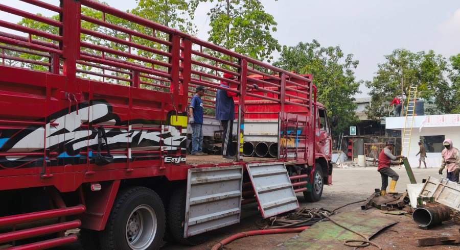
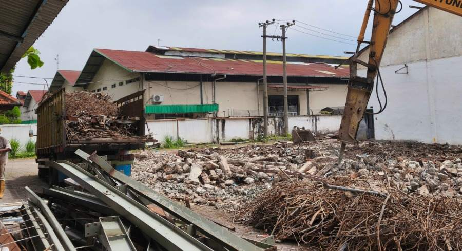
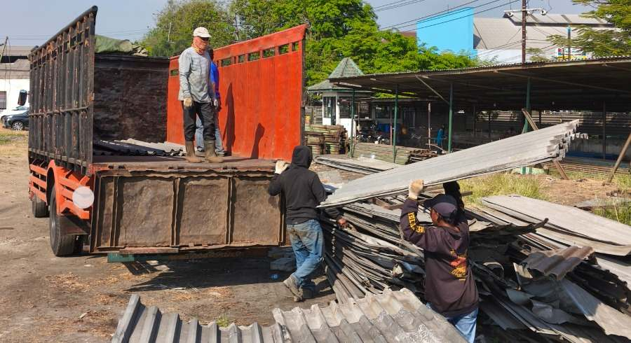
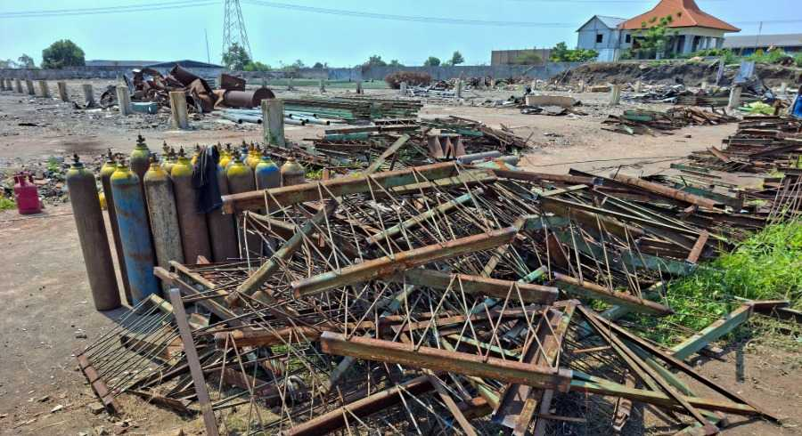
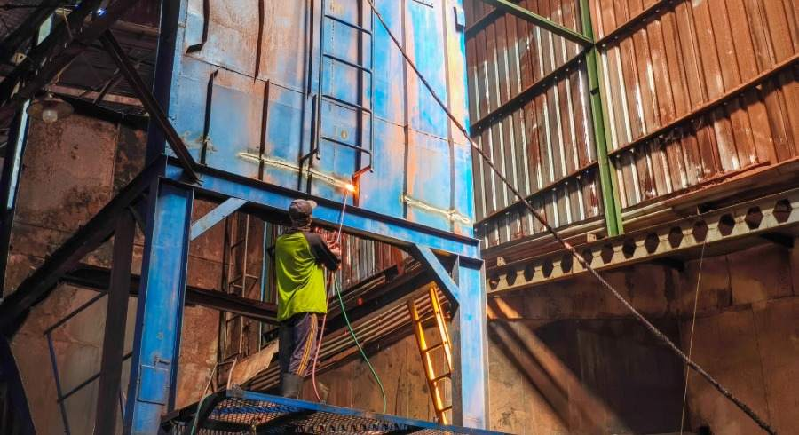
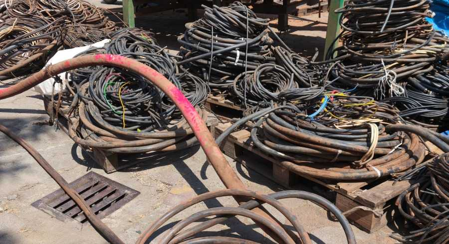

Dokumentasi Proyek yang Kami Tangani
Dokumentasi aktivitas peninjauan, pembelian, pembongkaran, dan pengangkutan material di lapangan.

Pengangkutan Besi Tua
Jenis: Material Logam
Aktivitas: Pengangkutan dan pemuatan besi tua serta material logam dari lokasi proyek.

Pembongkaran Pabrik
Jenis: Bangunan Industri / Pabrik
Aktivitas: Proses pembongkaran bangunan pabrik dan pengumpulan material besi serta logam hasil pembongkaran.

Pengangkutan Seng Aluminium Bekas
Jenis: Scrap Industri
Aktivitas: Pengangkutan lembaran seng dan aluminium bekas hasil pembongkaran dari lokasi proyek.

Kanal C Bekas Pabrik
Jenis: Material Sisa Proyek / Gudang
Aktivitas: Pengumpulan dan pengangkutan Kanal C serta material besi bekas dari area pabrik.

Pembongkaran Struktur Pabrik
Jenis: Aset Pabrik
Aktivitas: Proses pembongkaran struktur dan komponen logam pada bangunan pabrik untuk dipisahkan dan diangkut.

Kabel & Instalasi Bekas
Jenis: Material Bekas
Aktivitas: Pengumpulan kabel dan material instalasi bekas dari proyek yang sudah tidak digunakan.
Before & After
Perbandingan kondisi sebelum dan sesudah penanganan oleh Asas Material.
Contoh Aktivitas di Lapangan
Dokumentasi ini membantu memberi gambaran tentang jenis bangunan, material, dan scrap yang dapat kami tangani. Setiap proyek tetap dinilai berdasarkan kondisi aktual dan kesepakatan pekerjaan.